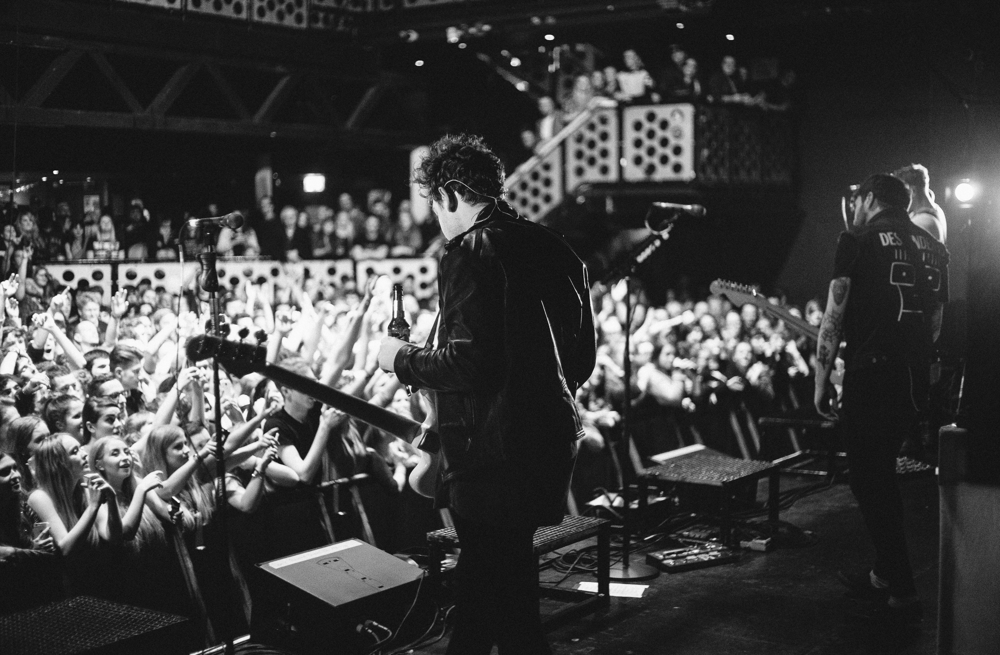
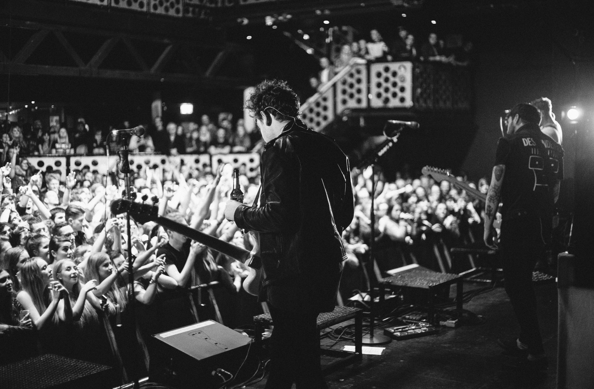
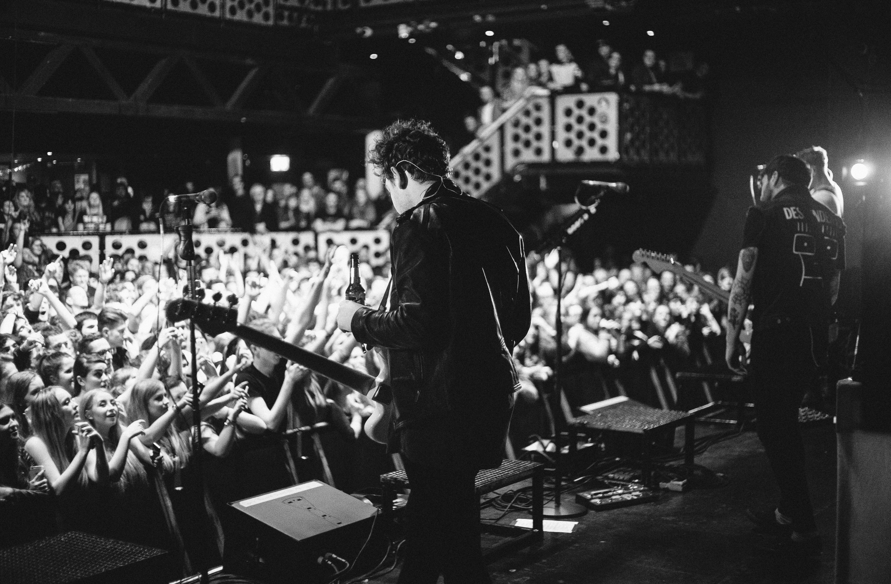

.jpg)


The Bees Knees are an unconventional, five-piece musical phenomena that is currently taking the world by storm. Based in Toronto, Ontario, their recent 5-people-playing- one-guitar rendition of Justin Bieber’s “Despacito” recently exploded on Youtube garnering well over 40 million views in under 3 weeks.
New fans from around the world immediately fell in love with the band’s organic, independent, sincere and honest original songwriting, cover interpretations and beautifully filmed videos. For the past 5 years, the band has built a massive following of dedicated fans from around the world through their unique and heartwarming approach to songwriting, filming and constant, open interaction with everyone their music touches The chemistry between the members of Meatwook Flack is undeniable. Marshall, Sarah and Gianni’s individual vocal stylings mesh seamlessly with Taylor’s haunting harmonies and keys all the while soaring over epic melodic arrangements held together by Joel Cassady’s driving and prolific percussion work.
The Bees Knees - Dusk
Dusk, The Bees Knees first full-length studio release, is a concept album that details metaphorical experiences of time, seasonal change, and the transient nature of life. Whimsical guitars, crashing synths, and towering baseliness merge in a caucophony of shoe-gaze, melodic fuzz. Their songs don’t sound quite like anything else. The Bees Knees use of both analog and digital tools creates a raw hybrid energy. Throughout the album, drums land with a spongy bounce, while pads exude rich notes of fungal modular squelch. The combination lends much of the album an organic texture that, in the vein of classic Aphex Twin records, hints at technology from an ancient future— one born of a great cataclysm of the past.

Richard Rovner 460 King Street West Toronto, Ontario M5V 1L7 info@thebeesknees.com
Artist Group International Marsha Vlasic marsha.vlasic@artistgrp.com
William Morris Endeavor Entertainment Russell Warby RLW@wmeentertainment.com
Copyright The Bees Knees© 2018 All Rights Reserved